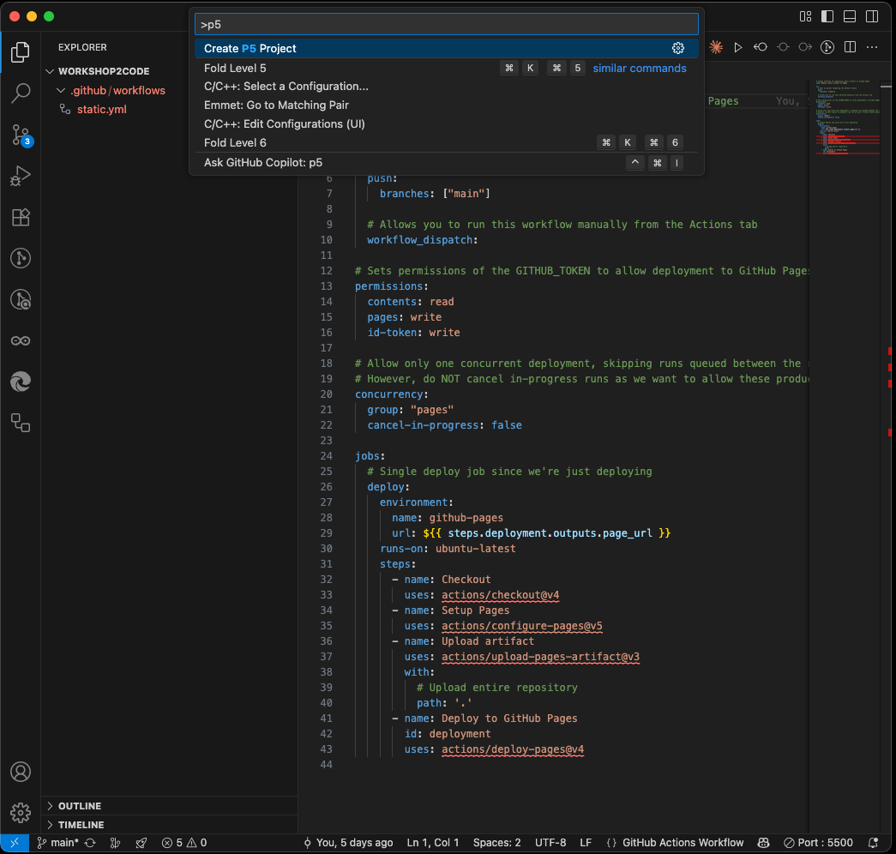
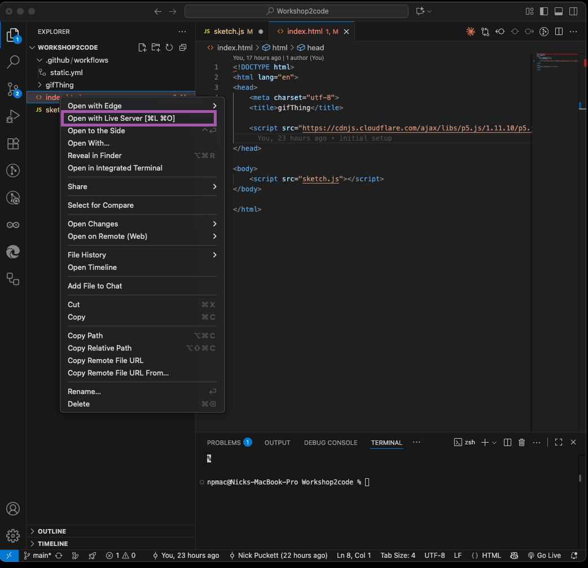

← Back to Home
Create a local p5 project with live preview
Summary
What You'll Create
- A complete P5.js project structure
- HTML and JavaScript files ready for coding
- Local development environment
VS Code Workflow
- Command Palette for project creation
- Live Server for real-time preview
- Integrated terminal access
- Extension-powered development
Development Setup
- Local web server running
- Browser developer tools access
- Automatic file watching
- Error console visibility
Version Control
- Git commit workflow
- Sync with GitHub repository
- Live website deployment
- Version history tracking
Important commands and locations in VS Code
Command Palette
This is where you execute specific commands inside VS code.
- To open it
- View -> Command Palette
- Hotkeys
- Windows : Ctrl + Shift + P
- MacOS : Cmd + Shift + P
Terminal
VS Code also has access to your Terminal inside the software. This is used for a variety of tasks within the development cycle.
- To open it
- View -> Terminal
- Hotkeys
- Windows : Ctrl + `
- MacOS : Ctrl + `
Part 1 - Create a new p5 project inside your Repo
It is important that you have already completed the steps of setting up a repo and cloning it to your computer. This guide assumes you have opened that folder in VS Code.
Step 1 - Execute 'Create P5 Project'
Open the Command Pallette and use 'Create P5 Project'

- Open the Command Pallette
- Start typing 'p5'
- This will bring up the 'Create P5 Project' command
- Click it
Step 2 - Name the Project
Give the project a name. This will be shown as the title in the index file

- Give it a name
- Press Enter
- This will generate
- Index.html file with p5 sourced
- Sketch.js file that is linked to the index file
Step 3 - Update the P5 Version
This isn't always necessary, but it is generally a good idea to update the p5 version to the current one.

- Inside the index file edit the link to point to a more current version of p5
Part 2 - Set up a live preview of what the site will look like
Similar to the p5 web editor, you need to have a view of what your code will look like. To do this we need to launch a webserver on your local machine to host the code. This will update automatically each time you save the index file
Step 1 - Open your index file with Live Server
This uses the Live Server extension to simplify the process of creating a server

- Right Click on index.html
- Select Open with Live Server
- This will open a web browser running your index page

Step 2 - Open the web console
To see errors or any console.log command outputs, you need to open the console in the browser. After this step you are ready to start coding

- Click the 3 dots
- More Tools
- Developer Tools
- This will open the console

Part 3 - Saving your progress using Git
Once you start making progress on your code, you'll want to save particular versions of the code. However, you won't be changing the filename, you will be creating new commit points using Git.
Step 1 - Open the Source Control panel and name your message
This panel contains all of the tools to interact with Git and your repo. Instead of giving the file a new name, you will write a message that describes the current state of the project

- Open the Source Control panel
- Write a commit message in the box
- Be descriptive of the current state
- Press Commit
- You have now saved the current state of your project
Step 2 - Sync the current state with Github
Making the commit saves the current state locally, but you also want to synchronize it with your online Github repo.

- Press Sync Changes to upload it to Github
- You can now see the changes reflected in your repo online
Step 3 - View the hosted version of the website
Because we set up the Repo with Pages, each time you sync the code, it also builds a version of the site at its url.
https://<github username>.github.io/<name of your repo>